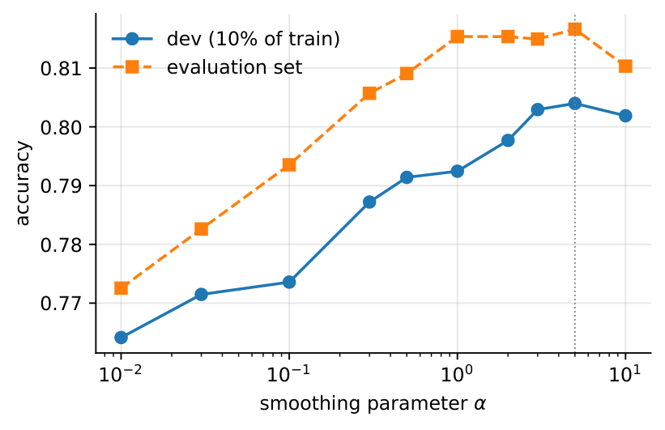
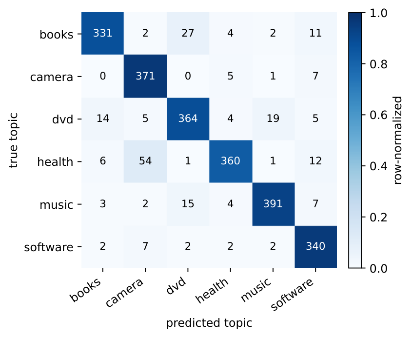
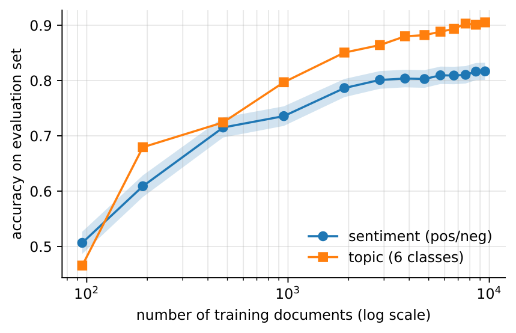
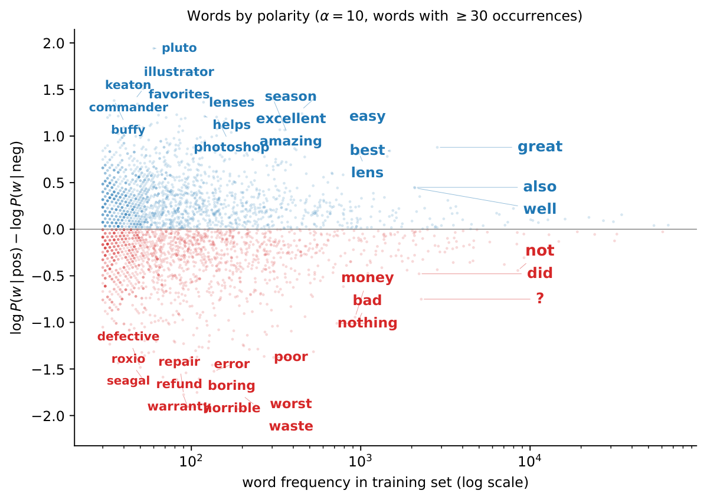
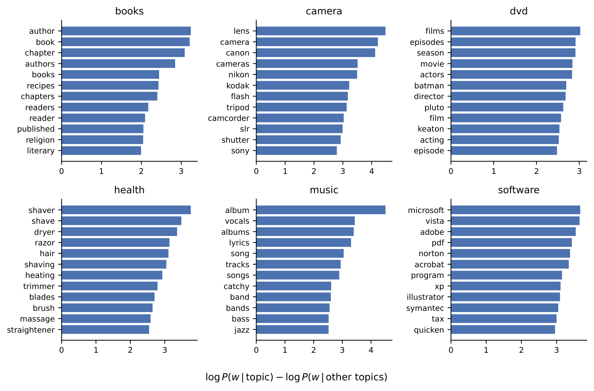
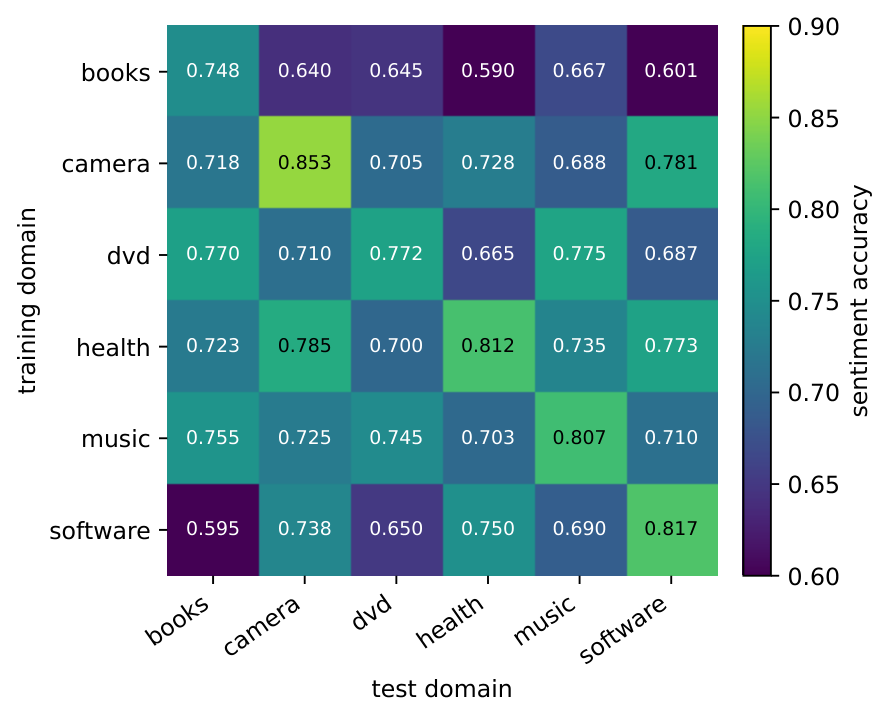

Summary
I implemented a multinomial Naive Bayes (NB) classifier from scratch in Python and used it to classify the sentiment polarity (pos/neg) of 11,914 Amazon customer reviews from six product categories (Blitzer et al., 2007). With additive smoothing (\(\alpha=5\), chosen on a development split taken from the training data) the classifier reaches an accuracy of 81.7% (95% CI [80.1%, 83.2%]) on the held-out 20% evaluation set, against 48.4% for a majority-class baseline. I also completed all of the optional tasks: a six-way topic classifier (90.5%), a learning curve, a ranking of the most informative words, Gaussian NB for the iris data (97.5%), a comparison with scikit-learn models, better features (bigrams and negation marking raise NB to 85.9%), and a domain-transfer study.
Data and experimental setup
The file all_sentiment_shuffled.txt holds one review per line. The reviews are
lower-cased and tokenized, and each line carries a topic label (books,
camera, dvd, health, music, software), a polarity label and a
document identifier. The documents were read with the read_documents function from the
handout. As instructed, the first 80% of the (already shuffled) file is the training set and
the remaining 20% is the evaluation set.
| Training | Evaluation | Total | |
|---|---|---|---|
| Documents | 9,531 | 2,383 | 11,914 |
| pos | 4,847 (50.9%) | 1,153 (48.4%) | 6,000 |
| neg | 4,684 (49.1%) | 1,230 (51.6%) | 5,914 |
| Tokens (all data) | 1,794,121 (mean 150.6, median 99 tokens / review) | ||
| Training vocabulary \(|V|\) | 52,392 word types |
All experiments are run by a single script, a4_naive_bayes.py (listed in
the code listing at the end), which writes every number reported below to
results/results.json and every figure to figures/. The Naive Bayes code is my
own. scikit-learn is used only in the optional comparison task (the scikit-learn comparison) and as a
cross-check of my Gaussian NB (the iris section).
The Naive Bayes model
Model and parameter estimation (train_nb)
A document \(d = (w_1,\dots,w_n)\) is treated as a bag of words. The multinomial NB model
assumes the words are conditionally independent given the class \(y\), so the joint
probability is
\[\begin{equation}
P(d, y) \;=\; P(y)\prod_{i=1}^{n} P(w_i \mid y)
\qquad\Longrightarrow\qquad
\log P(d,y) \;=\; \log P(y) + \sum_{i=1}^{n}\log P(w_i\mid y).
\tag{1}
\end{equation}\]
Working in log space turns the product of many small numbers into a sum, which avoids
numerical underflow. The parameters are estimated from the training counts:
\[\begin{equation}
\hat P(y) = \frac{N_y}{N},
\qquad
\hat P(w\mid y) = \frac{c(w,y) + \alpha}{\sum_{w'} c(w',y) + \alpha\,|V|},
\tag{2}
\end{equation}\]
where \(N_y\) is the number of training documents in class \(y\), \(c(w,y)\) is the number of
times word \(w\) occurs in class-\(y\) documents, and \(\alpha>0\) is the additive
(Laplace/Lidstone) smoothing parameter. Without smoothing (\(\alpha=0\)), a single word never
seen in class \(y\) would make \(P(d,y)=0\) whatever the other words say. I set
\(|V| = 52{,}392 + 1\): the extra slot reserves probability mass for unknown words, so
\(\hat P(\cdot\mid y)\) is a proper distribution and an unseen word gets
\(\alpha/(\sum_{w'}c(w',y)+\alpha|V|)\) instead of crashing the classifier.
train_nb precomputes and stores all of these log probabilities in a dictionary.
The core of train_nb is shown below (abridged; the full version is in
the code listing at the end).
def train_nb(documents, labels, alpha=1.0):
classes = sorted(set(labels))
class_counts = Counter(labels)
word_counts = {c: Counter() for c in classes}
for doc, y in zip(documents, labels):
word_counts[y].update(doc)
vocab = set().union(*word_counts.values())
V = len(vocab) + 1 # +1 slot for unseen words
for c in classes:
total = sum(word_counts[c].values())
denom = math.log(total + alpha * V)
log_prior[c] = math.log(class_counts[c] / len(documents))
log_lik[c] = {w: math.log(word_counts[c][w] + alpha) - denom for w in vocab}
log_unk[c] = math.log(alpha) - denom
return {...} # classes, log_prior, log_lik, log_unk, ...Scoring and classification
score_doc_label evaluates Eq. (1). classify_nb returns the
maximum a posteriori class \(\hat y = \arg\max_y \log P(d,y)\), which is valid because
\(P(y\mid d) \propto P(d,y)\). classify_documents maps classify_nb over a list of
documents, and accuracy returns the fraction of correct guesses.
def score_doc_label(document, label, model):
ll, unk = model["log_lik"][label], model["log_unk"][label]
return model["log_prior"][label] + sum(ll.get(w, unk) for w in document)
def classify_nb(document, model):
return max(model["classes"], key=lambda c: score_doc_label(document, c, model))
def classify_documents(docs, model):
return [classify_nb(d, model) for d in docs]
def accuracy(true_labels, guessed_labels):
return sum(t == g for t, g in zip(true_labels, guessed_labels)) / len(true_labels)The class labels are not hard-coded, so the same functions also serve the six-class topic classifier.
Sanity checks
Table 2 gives the joint probabilities of a few one-word documents
(\(\alpha=1\)). The positive document great has probability
\(1.32\times10^{-3}\), inside the expected range of 0.001–0.002 and higher than for
neg. For bad the order is reversed. The document
[’a’, ’top-quality’, ’performance’] contains a word that never occurs in training
(top-quality); it is scored without error and is classified pos.
| Document \(d\) | \(P(d,\text{pos})\) | \(P(d,\text{neg})\) | classify_nb |
|---|---|---|---|
great |
\(1.32\times10^{-3}\) | \(5.28\times10^{-4}\) | pos |
bad |
\(1.72\times10^{-4}\) | \(4.55\times10^{-4}\) | neg |
a top-quality performance |
\(3.54\times10^{-12}\) | \(1.81\times10^{-12}\) | pos |
| Short document | Prediction |
|---|---|
i love it |
pos |
highly recommended |
pos |
waste of money |
neg |
boring |
neg |
not good |
neg |
it broke after a week |
neg |
Choosing the smoothing parameter
To keep the evaluation set untouched, I held out the last 10% of the training data as a development (dev) set, trained on the other 90% for each \(\alpha\in\{0.01,0.03,0.1,0.3,0.5,1,2,3,5,10\}\), and chose the \(\alpha\) with the highest dev accuracy: \(\alpha^\star=5\). The final model is then retrained on the full training set. Figure 1 shows that very little smoothing (\(\alpha\le0.1\)) hurts, because rare words get extreme likelihood ratios that the model trusts too much. Everything from \(\alpha=1\) to \(\alpha=5\) performs about the same. The evaluation-set curve is shown for illustration only and was not used to choose \(\alpha\).

Evaluating the classifier
| Classifier | Accuracy | 95% confidence interval |
|---|---|---|
| Majority-class baseline (always pos) | 48.4% | [46.4%, 50.4%] |
| Naive Bayes, \(\alpha=1\) | 81.5% | [80.0%, 83.1%] |
| Naive Bayes, \(\alpha=5\) (chosen on dev) | 81.7% | [80.1%, 83.2%] |
Answer.
The Naive Bayes classifier reaches an accuracy of 81.66% on the evaluation set (1,946 of 2,383 documents correct). The 95% confidence interval is [80.1%, 83.2%], so the true accuracy on reviews from this distribution is very likely above 80%.
| True \(\backslash\) Predicted | pos | neg | Recall |
|---|---|---|---|
| pos | 901 | 252 | 78.1% |
| neg | 185 | 1045 | 85.0% |
| Precision | 83.0% | 80.6% |
| Topic | \(n\) | Accuracy |
|---|---|---|
| camera | 384 | 86.7% |
| music | 422 | 82.2% |
| dvd | 411 | 81.0% |
| books | 377 | 80.9% |
| software | 355 | 80.0% |
| health | 434 | 79.3% |
The classifier leans towards neg: positive reviews are mistaken for negative ones more often (252) than the reverse (185). Camera reviews are the easiest, probably because product reviews judge concrete, checkable qualities. Health and software reviews are the hardest.
Error analysis
Of the 2,383 evaluation documents, 437 are misclassified. To find the most instructive errors I looked at short documents (\(\le 40\) tokens) where the classifier was confidently wrong, i.e. where the log-odds \(\log P(d,\hat y) - \log P(d,y_{\text{true}})\) is large. For each, I also list the words that pushed the decision the wrong way most strongly. A word’s push is its log-likelihood ratio \(\log P(w\mid\hat y) - \log P(w\mid y_{\text{true}})\) summed over all its occurrences in the review; the per-review log-odds is the sum of these pushes plus the log prior ratio.
| Review (abridged) | True | Pred. | \(P(\hat y\mid d)\) | Words pushing to the wrong class |
|---|---|---|---|---|
| (a) this was not a waste of brad’s time or mine . good job ! | pos | neg | 0.946 | waste (+2.24), not (+0.44) |
| (b) was not impressed . narrow scoped , personal reflections , applications limited . i also read … and was also not impressed | neg | pos | 0.960 | impressed (+1.91), heart, also |
| (c) i bought zonealarm internet security suite for the included zonealarm pro firewall … if i did n’t already have norton antivirus , i’d use the antivirus , too | pos | neg | 0.999 | zonealarm (+2.13), antivirus (+1.35), norton (+1.32) |
| (d) excellent service , and the product worked extremely well . the only criticism … is the cost of postage . it was ridiculous … | pos | neg | 0.970 | ridiculous (+1.78), postage (+1.23), service (+1.08) |
| (e) this movie is a reallllllly scary movie . the only part i did n’t like was … be warned of grossness | pos | neg | 0.983 | warned (+1.14), did, scary, n’t |
| (f) this lifts your heart to god as you listen . beautifully done | neg | pos | 0.929 | beautifully (+1.34), heart (+0.96) |
| (g) the mirror’s light is quite dim and the magnification ( 5x ) is inadequate for most purposes | neg | pos | 0.925 | light, purposes, mirror (all \(<0.5\)) |
These errors fall into a few recurring groups:
Negation (a, b). A bag-of-words model cannot tell “not a waste” from “a waste” or “not impressed” from “impressed”.
wasteis one of the two most negative words in the model (322 negative vs. 30 positive occurrences; only refund is more negative at \(\alpha=5\)), so review (a) is pulled to neg even though it ends with “good job !”. Review (b) is the mirror image: impressed is a positive word (71 vs. 24 occurrences), it appears twice, and the negation that reverses it is invisible to the model.Topic and named-entity confounds (c). The review contains almost no sentiment words. The decision rests on product names. In the training data, most reviews that mention these products are negative: norton appears in 64 negative vs. 24 positive reviews, zonealarm in 10 vs. 3, and antivirus in 24 vs. 12. NB therefore learns that these names signal negativity. This is a spurious correlation, not sentiment.
Mixed or contrastive reviews (d, e). Positive reviews often include one complaint (“the only criticism … ridiculous”, “the only part I didn’t like”). NB weighs every word equally, wherever it appears. It cannot see that “the only …” marks the complaint as minor, and strong negative words such as ridiculous outweigh a single excellent. In (e), words describing the content of a horror film (scary, warned) lean negative in the training data but are praise in this genre.
Label noise (f). Review (f) reads as clearly positive, yet it is labelled neg. The labels come from star ratings, and a reviewer may give a low rating with an unrelated or sarcastic comment. No text classifier can get these right.
Sparse evidence (g). The informative words (dim, inadequate) are rare (18 and 9 training occurrences), so after smoothing they lean only weakly negative (log-likelihood ratios of \(-0.29\) and \(-0.33\)). Weak neutral cues such as light and purposes then decide the outcome. Short documents carry little evidence, so a few accidental cues can dominate.
Two more observations. First, the margin carries some information: the median absolute log-odds is 5.7 for correctly classified documents but only 2.7 for misclassified ones. Second, length matters. Accuracy is 84.9% for reviews of \(\le25\) tokens and 79.3% for reviews longer than 200 tokens. Long reviews tend to mix praise and complaints. And because NB treats every word as independent evidence, the log-odds grow roughly with length, so long reviews get extreme posteriors whether or not the prediction is right. For misclassified reviews of more than 200 tokens, the median posterior of the wrong class is 0.996, and 55% of them are wrong with \(P(\hat y\mid d)>0.99\). For misclassified reviews of \(\le 25\) tokens the median is 0.75 and none exceed 0.99. NB’s probabilities are therefore badly over-confident (poorly calibrated), even though its decisions are often right.
Optional tasks
Six-category topic classifier
The same train_nb/classify_nb functions were trained on the topic label (column 0)
instead of the polarity label. With \(\alpha=1\) (chosen on the dev split), the topic
classifier reaches 90.5% accuracy (95% CI [89.3%, 91.7%]); the majority baseline is
18.2%. Topic is easier to predict than sentiment because each topic has a distinctive
vocabulary (lens, album, author; see Fig. 5). The
confusion matrix (Fig. 2) shows the main error: 54 health reviews are
labelled camera. Many health products (shavers, trimmers, hair dryers) are electrical
gadgets. In these misclassified reviews, the words that most favour
camera are battery, charging, batteries, image,
picture and memory. Other confusions are between books and dvd
(27 book reviews, pushed towards dvd mainly by film words such as movie,
scenes, cast and drama) and between dvd and music (19 dvd
reviews, pushed by music words such as album, songs, band and
concert, as in reviews of concert DVDs).

Learning curve
Keeping the same 20% evaluation set, I trained on the first 1%, 2%, 5%, 10%, …, 100% of the training set. Figure 3 shows the result. Sentiment accuracy climbs steeply at first, from 50.7% (95 documents, about chance level) to 73.6% (953 documents) and 78.6% (1,906 documents), and then flattens: the last 70% of the training data adds only about 1.5 percentage points (80.1% \(\rightarrow\) 81.7%). The curve for the topic classifier has the same shape. More data has diminishing returns because the bag-of-words model itself (not the amount of data) is now the limit, as the bigram results in the section on informative features confirm.

Most informative features
In NB, each occurrence of word \(w\) shifts the log-odds \(\log\frac{P(\text{pos}\mid d)}{P(\text{neg}\mid
d)}\) by exactly
\[\begin{equation}
s(w) \;=\; \log P(w\mid\text{pos}) - \log P(w\mid\text{neg}),
\end{equation}\]
so I ranked words by \(s(w)\). print_top_nb(k, model) prints the \(k\) words with the
largest and smallest \(s(w)\). As the handout warns, a low \(\alpha\) gives uninterpretable results.
With \(\alpha=1\) the top of the list is rare proper nouns that happen to occur in only one class
(pluto, picard, seagal, valjean, even a corrupted token
the\x1a that occurs in a single negative review). Raising \(\alpha\)
pulls rare words towards a ratio of 1 and leaves words that are both frequent and polarized:
| \(\alpha\) | Top 15 words for each class (in order) |
|---|---|
| 1 | pos: pluto, lieutenant, powell, maizon, flaxseed, picard, spider-man, jakes, onenote, snack, … |
| neg: seagal, nis, lisbon, blah, gnr, e18, the\x1a, rip-off, dennett, trite, … | |
| 10 | pos: pluto, illustrator, keaton, commander, favorites, season, excellent, amazing, buffy, allows, lenses, organic, … |
| neg: waste, horrible, warranty, refund, boring, worst, repair, disappointing, garbage, seagal, roxio, symantec, … | |
| 50 | pos: excellent, easy, season, amazing, highly, wonderful, illustrator, lenses, great, perfect, favorite, best, allows, pluto, fantastic |
| neg: waste, worst, boring, horrible, support, poor, customer, warranty, terrible, refund, unfortunately, disappointing, worse, error, nothing |
With \(\alpha=50\) the lists are easy to read. Positive reviews praise (excellent, amazing, highly [recommend], easy), and negative reviews contain general complaints (waste, worst, boring) and also after-sales vocabulary (warranty, refund, customer [service], support, error). The latter words are not opinions in themselves, but people only mention them when something went wrong. Some domain words remain (season for TV-series DVDs, illustrator, symantec), a reminder that NB picks up any correlation, including the product confounds seen in the error analysis.
Figure 4 visualizes all words with at least 30 occurrences: the horizontal position is frequency and the vertical position is \(s(w)\). In each frequency band, the three most positive and three most negative words are written out, in a font size that grows with their frequency. Figure 5 does the same for topics, ranking words by \(\log P(w\mid\text{topic})-\log P(w\mid\text{other topics})\).


Naive Bayes for numerical data (iris)
For continuous features, the word distributions are replaced by one univariate Gaussian per
(feature, class) pair, \(p(x_j\mid y)=\mathcal N(x_j;\mu_{jy},\sigma^2_{jy})\), which gives
\(4\times3=12\) distributions. Training takes the per-class sample means and the
maximum-likelihood variances (\(\frac1{N_y}\sum(x-\mu)^2\)), and the score uses the log pdf:
\[\begin{equation}
\log p(\mathbf x, y) = \log P(y) + \sum_{j=1}^{4}\left[-\tfrac12\log(2\pi\sigma^2_{jy}) -
\frac{(x_j-\mu_{jy})^2}{2\sigma^2_{jy}}\right].
\end{equation}\]
With the handout’s split (40 random test flowers, np.random.seed(572)), the classifier is
97.5% accurate (39/40; one virginica is labelled versicolor). This is identical to
scikit-learn’s GaussianNB, and the two agree on 100% of the predictions. A single
40-flower split is noisy, so I repeated the experiment over 500 random splits: mean accuracy
\(95.4\%\pm3.0\%\) (2.5–97.5th percentile: 90%–100%).
| Class | sepal length | sepal width | petal length | petal width |
|---|---|---|---|---|
| setosa | \(5.01\pm0.33\) | \(3.41\pm0.38\) | \(1.47\pm0.17\) | \(0.23\pm0.09\) |
| versicolor | \(5.98\pm0.50\) | \(2.82\pm0.29\) | \(4.32\pm0.47\) | \(1.33\pm0.20\) |
| virginica | \(6.57\pm0.57\) | \(2.95\pm0.28\) | \(5.54\pm0.54\) | \(2.06\pm0.29\) |
Comparison with scikit-learn classifiers
I trained the classifiers suggested in the handout on the same split, using tf-idf features. To test whether a difference from my NB is real rather than chance, I used McNemar’s exact test on the paired predictions. Let \(b\) be the number of documents where NB is right and the other model is wrong, and \(c\) the number where the reverse holds. Under \(H_0\) (equal accuracy), \(b\sim\text{Binomial}(b+c,\tfrac12)\).
| Classifier | Accuracy | 95% CI | \(b\) | \(c\) | \(p\)-value |
|---|---|---|---|---|---|
| Own Naive Bayes (\(\alpha=5\)) | 81.7% | [80.1, 83.2] | – | – | – |
sklearn MultinomialNB (\(\alpha=5\)) |
81.8% | [80.2, 83.3] | 0 | 2 | 0.50 |
LinearSVC (tf-idf) |
85.2% | [83.8, 86.7] | 115 | 200 | \(1.9\times10^{-6}\) |
LogisticRegression (tf-idf) |
84.8% | [83.3, 86.2] | 104 | 178 | \(1.2\times10^{-5}\) |
MLPClassifier (tf-idf, 1000 best features) |
84.1% | [82.6, 85.5] | 135 | 192 | \(1.9\times10^{-3}\) |
scikit-learn’s MultinomialNB agrees with my implementation on 99.9% of the documents,
which supports the correctness of my code. It differs on only 2 documents. The remaining
difference is in unseen words: scikit-learn ignores them, while my model reserves an extra
vocabulary slot for them and gives them smoothed probability. The
discriminative models (linear SVM, logistic regression, MLP) are 2.4–3.6 points better, and
the differences are highly significant (\(p<0.002\)). Unlike NB, they do not assume independent
features: they learn weights that discount redundant or correlated words. The linear SVM is
the best of them and trains in under a second.
Improving the features
I tried two feature changes, both suggested in the handout. For each, \(\alpha\) was re-tuned on the dev split.
Negation marking (Pang et al., 2002): every token after a negation word (not, no, never, n’t, nothing, without, …) up to the next punctuation mark gets a
NOT_prefix. Example:
i did n’t NOT_like NOT_this NOT_camera , and the lens is not NOT_sharp NOT_at NOT_all .Bigrams: each pair of adjacent words is added as an extra feature (
not__good,waste__of,highly__recommend, …).
| Features | \(|V|\) | \(\alpha^\star\) | Accuracy | 95% CI | McNemar \(p\) |
|---|---|---|---|---|---|
| Unigrams (baseline) | 52,392 | 5 | 81.7% | [80.1, 83.2] | – |
| Unigrams + negation marking | 63,302 | 5 | 80.3% | [78.7, 81.9] | 0.043 (worse) |
| Unigrams + bigrams | 484,472 | 1 | 85.7% | [84.3, 87.1] | \(3.8\times10^{-13}\) |
| Negation marking + bigrams | 530,305 | 0.5 | 85.9% | [84.6, 87.3] | \(1.9\times10^{-11}\) |
Bigrams help a lot: +4.0 points, highly significant. NB with bigrams (85.7%) is now on par with the tf-idf linear SVM of Table 8 (85.2%); the difference between the two is not significant (McNemar \(b=157\), \(c=146\), \(p=0.57\)). Bigrams capture short-range context that unigrams lose, such as negation (not good, not impressed), intensifiers (highly recommend) and fixed phrases (waste of, the only). They fix some, but not all, of the errors in Table 5. The bigram model now gets review (b) (“not impressed”) right, and the negation + bigram model also fixes the mixed review (d). Review (a) gets more wrong: the new bigrams waste of (146 negative vs. 8 positive occurrences) and a waste (90 vs. 5) add negative evidence, was not also leans negative, and nothing in the model learns that not a waste reverses it.
Negation marking on its own made things slightly worse (80.3%,
\(p=0.043\)). The marking scope (until the next punctuation) is long and blunt: it also prefixes
neutral words (NOT_this, NOT_camera), which splits the counts of common words into two
sparser features and throws away useful statistics. Also, n’t and not already carry
a negative signal on their own as unigrams. Combined with bigrams, negation marking gives the best
result (85.9%), but the gain over bigrams alone (+0.25 points) is well inside the
confidence intervals and should not be read as a real improvement.
Domain sensitivity
For each topic I used the first 80% of that topic’s reviews for training and the last 20% for testing (about 1,600/400 per topic), trained an NB sentiment classifier (\(\alpha=5\)) on one topic, and tested it on every topic (Fig. 6). In the camera/book example from the handout:
| Test: camera | Test: books | |
|---|---|---|
| Train: camera | 85.3% [81.8, 88.7] | 71.8% [67.3, 76.2] |
| Train: books | 64.0% [59.3, 68.7] | 74.8% [70.5, 79.0] |
A camera classifier loses 13.5 points on book reviews, and a book classifier loses 10.8 points on camera reviews. Both drops are far larger than the confidence intervals. Book reviews are hard even for the book classifier (74.8%). One likely reason is that they spend much of their length describing the book’s content, whose emotional tone need not match the reviewer’s opinion.

The in-domain (diagonal) result is the best in five of the six rows. The exception is dvd, where the dvd classifier does about as well on music (77.5%) as on dvd itself (77.2%). On average, a classifier loses 5–13 points when moved to another domain (dvd: 5.1, software: 13.3). Transfer works best between similar domains. The product domains (camera, health, software) transfer among themselves at 75.9% on average (e.g. health\(\to\)camera 78.5%, camera\(\to\)software 78.1%), and the media domains (books, dvd, music) at 72.6% (e.g. dvd\(\to\)music 77.5%). Transfer between a product domain and a media domain is worst: 68.9% from product to media and 67.0% from media to product, with the lowest values for books\(\to\)health (59.0%) and software\(\to\)books (59.5%). The words that express sentiment are domain-specific (compare warranty, refund with boring in Table 6), and domain confounds (product names, plot words) do not transfer. This is the domain-adaptation problem studied by Blitzer et al. (2007). A model trained on the pooled training data of all six topics (six times as much data) beats the in-domain model on books (81.2% vs. 74.8%), dvd (81.5% vs. 77.2%), camera (87.0% vs. 85.3%) and music (82.0% vs. 80.8%). It is worse on health (79.5% vs. 81.2%) and software (78.6% vs. 81.7%), presumably because data from other domains dilutes the domain-specific cues.
Summary
A from-scratch multinomial Naive Bayes classifier with additive smoothing reaches 81.7% sentiment accuracy (95% CI 80.1–83.2%) on the held-out evaluation set.
The confidently wrong predictions I examined come from negation, mixed reviews, spurious topic/product correlations, sparse evidence in short reviews, and some label noise. NB’s posteriors are badly over-confident on long reviews.
Optional tasks: topic classification is easier (90.5%). The learning curve flattens after about 3,000 documents. Strongly smoothed log-likelihood ratios give interpretable sentiment words. Gaussian NB classifies iris at 97.5% (identical to scikit-learn). Discriminative scikit-learn models beat unigram NB by 2.4–3.6 points (\(p<0.002\)), but adding bigrams raises NB to 85.7–85.9%, on par with the linear SVM. Moving a classifier to another domain costs 5–13 points on average (camera\(\leftrightarrow\)books: 11–14 points).
References.
B. Pang, L. Lee, S. Vaithyanathan. Thumbs up? Sentiment Classification using Machine Learning Techniques. EMNLP 2002. https://aclanthology.org/W02-1011.pdf
J. Blitzer, M. Dredze, F. Pereira. Biographies, Bollywood, Boom-boxes and Blenders: Domain Adaptation for Sentiment Classification. ACL 2007. https://aclanthology.org/P07-1056.pdf
Source code
The complete code is listed below. It reads the two data files from a data/
sub-folder and runs in about one minute.
"""
SYDE 572 - Assignment 4: Text Classification with Naive Bayes
All Naive Bayes code below is written from scratch (no scikit-learn).
scikit-learn is used only in the optional "Train a classifier using
scikit-learn" task, and to cross-check the Gaussian NB on iris.
Run: python a4_naive_bayes.py
Outputs: figures/*.pdf and results/results.json (+ console log)
"""
from codecs import open
from collections import Counter, defaultdict
import csv
import json
import math
import os
import time
import numpy as np
import matplotlib
matplotlib.use("Agg")
import matplotlib.pyplot as plt
from scipy.stats import binomtest
HERE = os.path.dirname(os.path.abspath(__file__))
DATA = os.path.join(HERE, "data")
FIG = os.path.join(HERE, "figures")
RES = os.path.join(HERE, "results")
os.makedirs(FIG, exist_ok=True)
os.makedirs(RES, exist_ok=True)
plt.rcParams.update({"font.size": 10, "axes.spines.top": False,
"axes.spines.right": False, "savefig.bbox": "tight"})
RESULTS = {}
# ---------------------------------------------------------------------------
# Reading the data
# ---------------------------------------------------------------------------
def read_documents(doc_file, label_col=1):
"""label_col=1 -> sentiment (pos/neg), label_col=0 -> topic."""
docs, labels = [], []
with open(doc_file, encoding="utf-8") as f:
for line in f:
words = line.strip().split()
docs.append(words[3:])
labels.append(words[label_col])
return docs, labels
def read_all(doc_file):
docs, sent, topic = [], [], []
with open(doc_file, encoding="utf-8") as f:
for line in f:
words = line.strip().split()
docs.append(words[3:])
topic.append(words[0])
sent.append(words[1])
return docs, sent, topic
# ---------------------------------------------------------------------------
# Naive Bayes (multinomial, Laplace / additive smoothing)
# ---------------------------------------------------------------------------
def train_nb(documents, labels, alpha=1.0):
"""
Estimate the parameters of a multinomial Naive Bayes model.
P(y) = N_y / N (class prior, MLE)
P(w | y) = (c(w, y) + alpha) / (N_y + alpha*|V|) (additive smoothing)
|V| counts every word seen in training plus one slot for unseen words,
so P(. | y) is a proper distribution and unseen words get
alpha / (N_y + alpha*|V|). Everything is stored as log probabilities.
"""
classes = sorted(set(labels))
class_counts = Counter(labels)
word_counts = {c: Counter() for c in classes}
for doc, y in zip(documents, labels):
word_counts[y].update(doc)
vocab = set()
for c in classes:
vocab.update(word_counts[c])
V = len(vocab) + 1 # +1 for the "unknown word" type
n_docs = len(documents)
log_prior, log_lik, log_unk, n_tokens = {}, {}, {}, {}
for c in classes:
total = sum(word_counts[c].values())
denom = math.log(total + alpha * V)
log_prior[c] = math.log(class_counts[c] / n_docs)
log_lik[c] = {w: math.log(word_counts[c][w] + alpha) - denom for w in vocab}
log_unk[c] = math.log(alpha) - denom
n_tokens[c] = total
return {"classes": classes, "log_prior": log_prior, "log_lik": log_lik,
"log_unk": log_unk, "word_counts": word_counts, "vocab": vocab,
"alpha": alpha, "n_tokens": n_tokens}
def score_doc_label(document, label, model):
"""log P(document, label) = log P(label) + sum_i log P(w_i | label)."""
ll = model["log_lik"][label]
unk = model["log_unk"][label]
return model["log_prior"][label] + sum(ll.get(w, unk) for w in document)
def classify_nb(document, model):
return max(model["classes"], key=lambda c: score_doc_label(document, c, model))
def classify_documents(docs, model):
return [classify_nb(d, model) for d in docs]
def accuracy(true_labels, guessed_labels):
true_labels, guessed_labels = list(true_labels), list(guessed_labels)
return sum(t == g for t, g in zip(true_labels, guessed_labels)) / len(true_labels)
# ---------------------------------------------------------------------------
# Statistics helpers
# ---------------------------------------------------------------------------
def acc_ci(acc, n, z=1.96):
"""95% normal-approximation (Wald) interval for a binomial proportion."""
se = math.sqrt(acc * (1 - acc) / n)
return acc - z * se, acc + z * se
def mcnemar(true, pred_a, pred_b):
"""Exact McNemar test: are classifiers A and B equally accurate?"""
b = sum((a == t) and (p != t) for t, a, p in zip(true, pred_a, pred_b)) # A right, B wrong
c = sum((a != t) and (p == t) for t, a, p in zip(true, pred_a, pred_b)) # A wrong, B right
p = binomtest(b, b + c, 0.5).pvalue if b + c > 0 else 1.0
return b, c, p
def summarize(name, true, pred):
acc = accuracy(true, pred)
lo, hi = acc_ci(acc, len(true))
print(f" {name:<38s} acc = {acc:.4f} 95% CI [{lo:.4f}, {hi:.4f}]")
return {"acc": acc, "ci": [lo, hi], "n": len(true)}
def pick_alpha(train_docs, train_labels, grid, dev_frac=0.1):
"""Pick the smoothing parameter on a held-out dev slice of the TRAINING data."""
k = int((1 - dev_frac) * len(train_docs))
tr_d, tr_l, dv_d, dv_l = train_docs[:k], train_labels[:k], train_docs[k:], train_labels[k:]
scores = {}
for a in grid:
m = train_nb(tr_d, tr_l, alpha=a)
scores[a] = accuracy(dv_l, classify_documents(dv_d, m))
best = max(grid, key=lambda a: (scores[a], -abs(math.log(a))))
return best, scores
# ---------------------------------------------------------------------------
# Feature transformations (optional task: improve the features)
# ---------------------------------------------------------------------------
NEGATIONS = {"not", "no", "never", "n't", "nothing", "nobody", "none", "nor",
"neither", "nowhere", "cannot", "without", "hardly"}
CLAUSE_END = {".", ",", "!", "?", ";", ":", "(", ")", "--", "-"}
def mark_negation(doc):
"""Pang et al. (2002): prefix NOT_ to every token after a negation word
up to the next punctuation mark."""
out, neg = [], False
for w in doc:
if w in CLAUSE_END:
neg = False
out.append(w)
elif w in NEGATIONS:
neg = True
out.append(w)
else:
out.append("NOT_" + w if neg else w)
return out
def add_bigrams(doc):
return doc + [a + "__" + b for a, b in zip(doc, doc[1:])]
# ===========================================================================
def main():
t0 = time.time()
all_docs, all_sent, all_topic = read_all(os.path.join(DATA, "all_sentiment_shuffled.txt"))
N = len(all_docs)
split_point = int(0.80 * N)
train_docs, eval_docs = all_docs[:split_point], all_docs[split_point:]
train_labels, eval_labels = all_sent[:split_point], all_sent[split_point:]
train_topic, eval_topic = all_topic[:split_point], all_topic[split_point:]
lens = [len(d) for d in all_docs]
RESULTS["data"] = {
"n_docs": N, "n_train": len(train_docs), "n_eval": len(eval_docs),
"train_label_counts": dict(Counter(train_labels)),
"eval_label_counts": dict(Counter(eval_labels)),
"topic_counts": dict(Counter(all_topic)),
"mean_len": float(np.mean(lens)), "median_len": float(np.median(lens)),
"min_len": int(min(lens)), "max_len": int(max(lens)),
"n_tokens": int(sum(lens)),
}
print("Data:", json.dumps(RESULTS["data"], indent=1))
# -------------------------------------------------------------- sanity checks
print("\n=== Sanity checks (alpha = 1) ===")
m1 = train_nb(train_docs, train_labels, alpha=1.0)
RESULTS["vocab_size"] = len(m1["vocab"])
RESULTS["class_tokens"] = m1["n_tokens"]
RESULTS["priors"] = {c: math.exp(v) for c, v in m1["log_prior"].items()}
sanity = {}
for doc in (["great"], ["bad"], ["a", "top-quality", "performance"]):
key = " ".join(doc)
sanity[key] = {}
for c in ("pos", "neg"):
lp = score_doc_label(doc, c, m1)
sanity[key][c] = {"logp": lp, "p": math.exp(lp)}
print(f" P({c}, {doc}) = exp({lp:.4f}) = {math.exp(lp):.3e}")
RESULTS["sanity"] = sanity
small = [["great"], ["bad"], ["i", "love", "it"], ["waste", "of", "money"],
["not", "good"], ["highly", "recommended"], ["boring"],
["a", "top-quality", "performance"], ["it", "broke", "after", "a", "week"]]
RESULTS["small_docs"] = {" ".join(d): classify_nb(d, m1) for d in small}
for d in small:
print(f" classify_nb({' '.join(d)!r}) -> {classify_nb(d, m1)}")
# ---------------------------------------------------------- alpha selection
print("\n=== Smoothing parameter (dev = last 10% of training) ===")
grid = [0.01, 0.03, 0.1, 0.3, 0.5, 1.0, 2.0, 3.0, 5.0, 10.0]
best_alpha, dev_scores = pick_alpha(train_docs, train_labels, grid)
for a in grid:
print(f" alpha = {a:<6} dev acc = {dev_scores[a]:.4f}")
print(" best alpha:", best_alpha)
RESULTS["alpha_dev"] = {"grid": grid, "dev_acc": [dev_scores[a] for a in grid],
"best": best_alpha}
# test accuracy as a function of alpha (for the report only, not for selection)
test_by_alpha = []
for a in grid:
m = train_nb(train_docs, train_labels, alpha=a)
test_by_alpha.append(accuracy(eval_labels, classify_documents(eval_docs, m)))
RESULTS["alpha_test"] = test_by_alpha
fig, ax = plt.subplots(figsize=(5.2, 3.2))
ax.semilogx(grid, [dev_scores[a] for a in grid], "o-", label="dev (10% of train)")
ax.semilogx(grid, test_by_alpha, "s--", label="evaluation set")
ax.axvline(best_alpha, color="grey", lw=0.8, ls=":")
ax.set_xlabel(r"smoothing parameter $\alpha$")
ax.set_ylabel("accuracy")
ax.legend(frameon=False)
ax.grid(alpha=0.3)
fig.savefig(os.path.join(FIG, "alpha_sweep.pdf"))
plt.close(fig)
# --------------------------------------------------------------- evaluation
print("\n=== Evaluation on the 20% test set ===")
model = train_nb(train_docs, train_labels, alpha=best_alpha)
pred = classify_documents(eval_docs, model)
RESULTS["main"] = summarize(f"NB (alpha={best_alpha})", eval_labels, pred)
RESULTS["main"]["alpha"] = best_alpha
pred_a1 = classify_documents(eval_docs, m1)
RESULTS["main_alpha1"] = summarize("NB (alpha=1)", eval_labels, pred_a1)
maj = Counter(train_labels).most_common(1)[0][0]
RESULTS["majority"] = summarize(f"majority baseline ({maj})", eval_labels, [maj] * len(eval_labels))
# confusion matrix
cm = {t: {p: 0 for p in ("pos", "neg")} for t in ("pos", "neg")}
for t, p in zip(eval_labels, pred):
cm[t][p] += 1
RESULTS["confusion"] = cm
print(" confusion (rows=true):", cm)
# per-topic accuracy on the eval set
per_topic = {}
for tp in sorted(set(eval_topic)):
idx = [i for i, x in enumerate(eval_topic) if x == tp]
per_topic[tp] = {"acc": accuracy([eval_labels[i] for i in idx], [pred[i] for i in idx]),
"n": len(idx)}
RESULTS["per_topic_acc"] = per_topic
print(" per-topic accuracy:", per_topic)
# ----------------------------------------------------------- error analysis
print("\n=== Error analysis ===")
errors = []
for i, (d, t, p) in enumerate(zip(eval_docs, eval_labels, pred)):
if t != p:
margin = score_doc_label(d, p, model) - score_doc_label(d, t, model)
errors.append((i, len(d), margin, t, p))
RESULTS["n_errors"] = len(errors)
short = sorted([e for e in errors if e[1] <= 40], key=lambda e: -e[2])[:10]
err_list = []
for i, L, margin, t, p in short:
d = eval_docs[i]
# per-word contribution to log P(p|d)/P(t|d)
contrib = Counter()
for w in d:
contrib[w] += (model["log_lik"][p].get(w, model["log_unk"][p])
- model["log_lik"][t].get(w, model["log_unk"][t]))
top = [(w, round(v, 2)) for w, v in contrib.most_common(5)]
err_list.append({"idx": split_point + i, "topic": eval_topic[i], "true": t, "pred": p,
"len": L, "log_odds": margin,
"p_wrong": 1 / (1 + math.exp(-margin)),
"text": " ".join(d), "top_words": top})
print(f" [{eval_topic[i]}] true={t} pred={p} len={L} log-odds={margin:.2f}")
print(" ", " ".join(d))
print(" strongest words:", top)
RESULTS["errors"] = err_list
# margin distribution: correct vs. incorrect
margins_c, margins_e = [], []
for d, t, p in zip(eval_docs, eval_labels, pred):
s = abs(score_doc_label(d, "pos", model) - score_doc_label(d, "neg", model))
(margins_c if t == p else margins_e).append(s)
RESULTS["median_margin_correct"] = float(np.median(margins_c))
RESULTS["median_margin_error"] = float(np.median(margins_e))
# errors vs document length
len_bins = [0, 25, 50, 100, 200, 10_000]
by_len = []
for lo, hi in zip(len_bins, len_bins[1:]):
idx = [i for i, d in enumerate(eval_docs) if lo < len(d) <= hi]
if idx:
by_len.append({"range": f"{lo+1}-{hi}" if hi < 10_000 else f">{lo}", "n": len(idx),
"acc": accuracy([eval_labels[i] for i in idx], [pred[i] for i in idx])})
RESULTS["acc_by_length"] = by_len
print(" accuracy by length:", by_len)
# =========================================================== OPTIONAL TASKS
# ------------------------------------------------- six-category classifier
print("\n=== (Opt) Six-category topic classifier ===")
best_alpha_t, dev_t = pick_alpha(train_docs, train_topic, grid)
tmodel = train_nb(train_docs, train_topic, alpha=best_alpha_t)
tpred = classify_documents(eval_docs, tmodel)
RESULTS["topic"] = summarize(f"topic NB (alpha={best_alpha_t})", eval_topic, tpred)
RESULTS["topic"]["alpha"] = best_alpha_t
RESULTS["topic"]["dev"] = [dev_t[a] for a in grid]
topics = sorted(set(all_topic))
tcm = np.zeros((6, 6), dtype=int)
for t, p in zip(eval_topic, tpred):
tcm[topics.index(t), topics.index(p)] += 1
RESULTS["topic"]["confusion"] = tcm.tolist()
RESULTS["topic"]["labels"] = topics
RESULTS["topic"]["majority"] = max(Counter(eval_topic).values()) / len(eval_topic)
fig, ax = plt.subplots(figsize=(4.6, 4.0))
rown = tcm / tcm.sum(1, keepdims=True)
im = ax.imshow(rown, cmap="Blues", vmin=0, vmax=1)
for i in range(6):
for j in range(6):
ax.text(j, i, tcm[i, j], ha="center", va="center",
color="white" if rown[i, j] > 0.6 else "black", fontsize=9)
ax.set_xticks(range(6), topics, rotation=35, ha="right")
ax.set_yticks(range(6), topics)
ax.set_xlabel("predicted topic")
ax.set_ylabel("true topic")
ax.spines[:].set_visible(False)
fig.colorbar(im, ax=ax, fraction=0.046, pad=0.04, label="row-normalized")
fig.savefig(os.path.join(FIG, "topic_confusion.pdf"))
plt.close(fig)
# ------------------------------------------------------------ learning curve
print("\n=== (Opt) Learning curve ===")
fracs = [0.01, 0.02, 0.05, 0.1, 0.2, 0.3, 0.4, 0.5, 0.6, 0.7, 0.8, 0.9, 1.0]
lc = []
for f in fracs:
k = max(2, int(f * len(train_docs)))
m = train_nb(train_docs[:k], train_labels[:k], alpha=best_alpha)
a = accuracy(eval_labels, classify_documents(eval_docs, m))
mt = train_nb(train_docs[:k], train_topic[:k], alpha=best_alpha_t)
at = accuracy(eval_topic, classify_documents(eval_docs, mt))
lc.append({"frac": f, "n": k, "acc": a, "ci": acc_ci(a, len(eval_docs)), "topic_acc": at})
print(f" {f:>5.0%} ({k:5d} docs): sentiment acc = {a:.4f}, topic acc = {at:.4f}")
RESULTS["learning_curve"] = lc
fig, ax = plt.subplots(figsize=(5.6, 3.4))
ns = [r["n"] for r in lc]
ax.plot(ns, [r["acc"] for r in lc], "o-", label="sentiment (pos/neg)")
ax.fill_between(ns, [r["ci"][0] for r in lc], [r["ci"][1] for r in lc], alpha=0.2)
ax.plot(ns, [r["topic_acc"] for r in lc], "s-", label="topic (6 classes)")
ax.set_xscale("log")
ax.set_xlabel("number of training documents (log scale)")
ax.set_ylabel("accuracy on evaluation set")
ax.grid(alpha=0.3, which="both")
ax.legend(frameon=False, loc="lower right")
fig.savefig(os.path.join(FIG, "learning_curve.pdf"))
plt.close(fig)
# ------------------------------------------------------ informative features
print("\n=== (Opt) Most informative features ===")
def top_features(model, k, c1, c2, min_count=0):
"""Rank words by log P(w|c1) - log P(w|c2) (the per-occurrence log
likelihood ratio, i.e. the amount one occurrence shifts the log odds)."""
scores = {}
for w in model["vocab"]:
if model["word_counts"][c1][w] + model["word_counts"][c2][w] < min_count:
continue
scores[w] = model["log_lik"][c1][w] - model["log_lik"][c2][w]
ranked = sorted(scores.items(), key=lambda x: -x[1])
return ranked[:k], ranked[::-1][:k], scores
def print_top_nb(k, model, c1="pos", c2="neg"):
top1, top2, _ = top_features(model, k, c1, c2)
print(f" strongest {c1}:", ", ".join(f"{w} ({s:.2f})" for w, s in top1))
print(f" strongest {c2}:", ", ".join(f"{w} ({s:.2f})" for w, s in top2))
return top1, top2
feats = {}
for a in (1.0, 10.0, 50.0):
mf = train_nb(train_docs, train_labels, alpha=a)
print(f" alpha = {a}")
tp, tn = print_top_nb(15, mf)
feats[str(a)] = {"pos": tp, "neg": tn}
RESULTS["top_features"] = feats
# visualization by polarity: scatter of frequency vs. log-likelihood ratio
mf = train_nb(train_docs, train_labels, alpha=10.0)
_, _, sc = top_features(mf, 0, "pos", "neg", min_count=30)
words = list(sc)
freq = np.array([mf["word_counts"]["pos"][w] + mf["word_counts"]["neg"][w] for w in words])
llr = np.array([sc[w] for w in words])
fig, ax = plt.subplots(figsize=(8.0, 5.4))
ax.scatter(freq, llr, s=4, c=np.where(llr > 0, "#1f77b4", "#d62728"), alpha=0.18, lw=0)
# label the most polarized words in each frequency band so that labels
# spread out horizontally; then push labels apart vertically (simple repel)
edges = [30, 60, 120, 250, 600, 2000, 1e7]
for sign, color in ((1, "#1f77b4"), (-1, "#d62728")):
for lo, hi in zip(edges, edges[1:]):
idx = [i for i in range(len(words)) if lo <= freq[i] < hi and sign * llr[i] > 0]
idx = sorted(idx, key=lambda i: -sign * llr[i])[:3]
ys, prev = [], None
for i in idx: # most extreme first; keep >= 0.24 apart toward zero
y = llr[i]
if prev is not None and abs(prev - y) < 0.24:
y = prev - sign * 0.24
ys.append(y)
prev = y
xc = math.sqrt(lo * min(hi, freq.max())) # band centre (log scale)
for i, y in zip(idx, ys):
size = 6.5 + 1.2 * np.log10(freq[i])
ax.annotate(words[i], (freq[i], llr[i]), xytext=(xc, y), fontsize=size,
color=color, ha="center", va="center", fontweight="bold",
arrowprops=dict(arrowstyle="-", color=color, lw=0.4, alpha=0.5))
ax.axhline(0, color="grey", lw=0.6)
ax.set_xscale("log")
ax.set_xlabel("word frequency in training set (log scale)")
ax.set_ylabel(r"$\log P(w\,|\,\mathrm{pos}) - \log P(w\,|\,\mathrm{neg})$")
ax.set_title(r"Words by polarity ($\alpha=10$, words with $\geq 30$ occurrences)", fontsize=10)
fig.savefig(os.path.join(FIG, "polarity_words.pdf"))
plt.close(fig)
# visualization by topic: words most indicative of each topic vs. the rest
mt = train_nb(train_docs, train_topic, alpha=10.0)
fig, axes = plt.subplots(2, 3, figsize=(8.6, 5.6))
topic_feats = {}
tot_all = Counter()
for c in topics:
tot_all.update(mt["word_counts"][c])
V = len(mt["vocab"]) + 1
for ax, c in zip(axes.flat, topics):
rest = tot_all.copy()
rest.subtract(mt["word_counts"][c])
Nc, Nr = mt["n_tokens"][c], sum(mt["n_tokens"].values()) - mt["n_tokens"][c]
s = {w: math.log((mt["word_counts"][c][w] + 10) / (Nc + 10 * V))
- math.log((rest[w] + 10) / (Nr + 10 * V))
for w in mt["vocab"] if tot_all[w] >= 30}
best = sorted(s.items(), key=lambda x: -x[1])[:12]
topic_feats[c] = [(w, round(v, 2)) for w, v in best]
ax.barh([w for w, _ in best][::-1], [v for _, v in best][::-1], color="#4c72b0")
ax.set_title(c, fontsize=10)
ax.tick_params(axis="y", labelsize=8)
ax.tick_params(axis="x", labelsize=8)
fig.supxlabel(r"$\log P(w\,|\,\mathrm{topic}) - \log P(w\,|\,\mathrm{other\ topics})$", fontsize=10)
fig.tight_layout()
fig.savefig(os.path.join(FIG, "topic_words.pdf"))
plt.close(fig)
RESULTS["topic_features"] = topic_feats
print(" topic words:", topic_feats)
# ------------------------------------------------------- Gaussian NB (iris)
print("\n=== (Opt) Gaussian Naive Bayes on iris ===")
X, Y = [], []
with open(os.path.join(DATA, "iris.csv"), encoding="utf-8") as f:
rd = csv.reader(f)
header = next(rd)
for row in rd:
if row:
X.append([float(v) for v in row[:4]])
Y.append(row[4])
X, Y = np.array(X), np.array(Y)
def train_gnb(X, Y):
classes = sorted(set(Y))
prm = {}
for c in classes:
Xc = X[Y == c]
prm[c] = {"log_prior": math.log(len(Xc) / len(X)),
"mu": Xc.mean(0), "var": Xc.var(0)} # MLE: ddof = 0
return {"classes": classes, "params": prm}
def score_gnb(x, c, model):
p = model["params"][c]
return p["log_prior"] + np.sum(-0.5 * np.log(2 * np.pi * p["var"])
- (x - p["mu"]) ** 2 / (2 * p["var"]))
def classify_gnb(Xs, model):
return [max(model["classes"], key=lambda c: score_gnb(x, c, model)) for x in Xs]
from sklearn.naive_bayes import GaussianNB
np.random.seed(572)
n, n_test = len(Y), 40
eval_part = np.array([False] * n)
for i in np.random.choice(range(n), replace=False, size=n_test):
eval_part[i] = True
gm = train_gnb(X[~eval_part], Y[~eval_part])
gpred = classify_gnb(X[eval_part], gm)
gacc = accuracy(Y[eval_part], gpred)
sk = GaussianNB().fit(X[~eval_part], Y[~eval_part])
sk_acc = accuracy(Y[eval_part], sk.predict(X[eval_part]))
agree = float(np.mean(np.array(gpred) == sk.predict(X[eval_part])))
print(f" own GNB acc = {gacc:.4f}, sklearn GaussianNB acc = {sk_acc:.4f}, agreement = {agree}")
params = {c: {"mu": gm["params"][c]["mu"].round(3).tolist(),
"sd": np.sqrt(gm["params"][c]["var"]).round(3).tolist()} for c in gm["classes"]}
# repeated random splits
accs = []
rng = np.random.RandomState(0)
for _ in range(500):
ep = np.zeros(n, bool)
ep[rng.choice(n, n_test, replace=False)] = True
m = train_gnb(X[~ep], Y[~ep])
accs.append(accuracy(Y[ep], classify_gnb(X[ep], m)))
gcm = np.zeros((3, 3), int)
cls = gm["classes"]
for t, p in zip(Y[eval_part], gpred):
gcm[cls.index(t), cls.index(p)] += 1
RESULTS["iris"] = {"acc": gacc, "sk_acc": sk_acc, "agree": agree, "params": params,
"features": header[:4], "repeat_mean": float(np.mean(accs)),
"repeat_sd": float(np.std(accs)),
"repeat_q": [float(np.percentile(accs, 2.5)), float(np.percentile(accs, 97.5))],
"confusion": gcm.tolist(), "classes": cls}
print(" ", RESULTS["iris"])
# ------------------------------------------------- scikit-learn classifiers
print("\n=== (Opt) scikit-learn classifiers ===")
from sklearn.svm import LinearSVC
from sklearn.neural_network import MLPClassifier
from sklearn.linear_model import LogisticRegression
from sklearn.naive_bayes import MultinomialNB
from sklearn.pipeline import make_pipeline
from sklearn.feature_extraction.text import TfidfVectorizer, CountVectorizer
from sklearn.feature_selection import SelectKBest
ident = lambda x: x
def train_sklearn(docs, labels, clf, k="all", vec=None):
vec = vec or TfidfVectorizer(preprocessor=ident, tokenizer=ident, token_pattern=None,
lowercase=False)
pipeline = make_pipeline(vec, SelectKBest(k=k), clf)
pipeline.fit(docs, labels)
return pipeline
def classify_documents_sklearn(docs, model):
return model.predict(docs)
sk_res = {}
configs = [
("LinearSVC (tf-idf)", lambda: train_sklearn(train_docs, train_labels, LinearSVC())),
("LogisticRegression (tf-idf)", lambda: train_sklearn(train_docs, train_labels,
LogisticRegression(max_iter=2000))),
("MLPClassifier (tf-idf, 1000 best)", lambda: train_sklearn(
train_docs, train_labels,
MLPClassifier(hidden_layer_sizes=(100,), max_iter=50, early_stopping=True,
random_state=0), k=1000)),
("MultinomialNB (counts)", lambda: train_sklearn(
train_docs, train_labels, MultinomialNB(alpha=best_alpha),
vec=CountVectorizer(preprocessor=ident, tokenizer=ident, token_pattern=None,
lowercase=False))),
]
for name, fn in configs:
t = time.time()
mdl = fn()
p = list(classify_documents_sklearn(eval_docs, mdl))
r = summarize(name, eval_labels, p)
b, c, pv = mcnemar(eval_labels, pred, p)
r.update({"mcnemar_nb_right_other_wrong": b, "mcnemar_nb_wrong_other_right": c,
"p": pv, "train_s": time.time() - t})
print(f" McNemar vs own NB: b={b}, c={c}, p={pv:.3g}")
sk_res[name] = r
if name.startswith("MultinomialNB"):
sk_res[name]["agree_with_own_nb"] = float(np.mean(np.array(p) == np.array(pred)))
RESULTS["sklearn"] = sk_res
# --------------------------------------------------------- improve features
print("\n=== (Opt) Improved features ===")
feat_res = {}
variants = {
"unigrams (baseline)": ident,
"unigrams + negation marking": mark_negation,
"unigrams + bigrams": add_bigrams,
"negation marking + bigrams": lambda d: add_bigrams(mark_negation(d)),
}
preds_by_var = {}
for name, tf in variants.items():
trd = [tf(d) for d in train_docs]
evd = [tf(d) for d in eval_docs]
a_best, _ = pick_alpha(trd, train_labels, grid)
m = train_nb(trd, train_labels, alpha=a_best)
p = classify_documents(evd, m)
preds_by_var[name] = p
r = summarize(f"{name} (a={a_best})", eval_labels, p)
b, c, pv = mcnemar(eval_labels, pred, p)
r.update({"alpha": a_best, "vocab": len(m["vocab"]), "b": b, "c": c, "p": pv})
print(f" McNemar vs baseline: b={b}, c={c}, p={pv:.3g}")
feat_res[name] = r
RESULTS["features"] = feat_res
RESULTS["neg_example"] = " ".join(mark_negation(
"i did n't like this camera , and the lens is not sharp at all .".split()))
# --------------------------------------------------------- domain sensitivity
print("\n=== (Opt) Domain sensitivity ===")
per = {}
for tp in topics:
idx = [i for i, x in enumerate(all_topic) if x == tp]
k = int(0.8 * len(idx))
per[tp] = ([all_docs[i] for i in idx[:k]], [all_sent[i] for i in idx[:k]],
[all_docs[i] for i in idx[k:]], [all_sent[i] for i in idx[k:]])
dm = np.zeros((6, 6))
for i, src in enumerate(topics):
m = train_nb(per[src][0], per[src][1], alpha=best_alpha)
for j, tgt in enumerate(topics):
dm[i, j] = accuracy(per[tgt][3], classify_documents(per[tgt][2], m))
# pooled model trained on the in-domain-train part of all topics
pooled_tr_d = [d for tp in topics for d in per[tp][0]]
pooled_tr_l = [l for tp in topics for l in per[tp][1]]
pm = train_nb(pooled_tr_d, pooled_tr_l, alpha=best_alpha)
pooled = [accuracy(per[t][3], classify_documents(per[t][2], pm)) for t in topics]
RESULTS["domain"] = {"topics": topics, "matrix": dm.tolist(), "pooled": pooled,
"n_train": {t: len(per[t][0]) for t in topics},
"n_test": {t: len(per[t][2]) for t in topics}}
# camera vs books with McNemar-free CI comparison
cb = {}
for src, tgt in (("camera", "camera"), ("camera", "books"), ("books", "books"), ("books", "camera")):
a = dm[topics.index(src), topics.index(tgt)]
cb[f"{src}->{tgt}"] = {"acc": a, "ci": acc_ci(a, len(per[tgt][3]))}
RESULTS["domain"]["camera_books"] = cb
print(np.round(dm, 3))
print(" pooled:", np.round(pooled, 3))
fig, ax = plt.subplots(figsize=(5.0, 4.2))
im = ax.imshow(dm, cmap="viridis", vmin=0.6, vmax=0.9)
for i in range(6):
for j in range(6):
ax.text(j, i, f"{dm[i, j]:.3f}", ha="center", va="center", fontsize=8,
color="black" if dm[i, j] > 0.78 else "white")
ax.set_xticks(range(6), topics, rotation=35, ha="right")
ax.set_yticks(range(6), topics)
ax.set_xlabel("test domain")
ax.set_ylabel("training domain")
ax.spines[:].set_visible(False)
fig.colorbar(im, ax=ax, fraction=0.046, pad=0.04, label="sentiment accuracy")
fig.savefig(os.path.join(FIG, "domain_matrix.pdf"))
plt.close(fig)
RESULTS["runtime_s"] = time.time() - t0
with open(os.path.join(RES, "results.json"), "w", encoding="utf-8") as f:
json.dump(RESULTS, f, indent=1, default=float)
print(f"\nDone in {RESULTS['runtime_s']:.1f} s")
if __name__ == "__main__":
main()